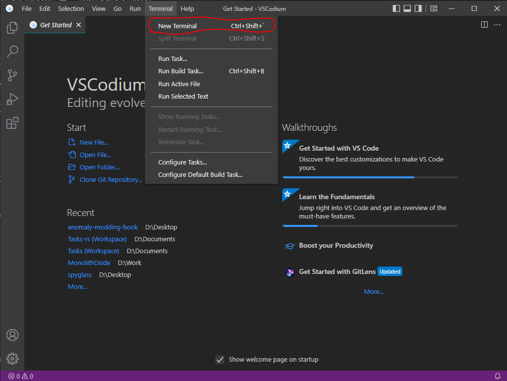
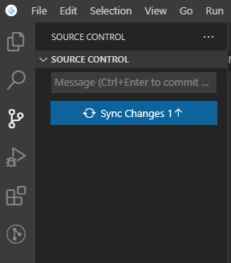

Contributing to this book
This book is written using mdBook. To contribute to this book, you will need:
VSCodium or VSCode is highly recommended to use. Although it is optional, I will assume you are using it.
Below I describe the setup steps needed to run and contribute to this book.
Installing VSCodium
Installing VSCodium is trivial, just go to the link and download it.
Installing git and mdbook
To install these we will use command-line installer called Scoop.
- Open VSCodium
- Open a new terminal window by using Terminal menu

- Open a new Powershell session by using Terminal's "+" menu

- Run the following commands to install Scoop
Set-ExecutionPolicy RemoteSigned -Scope CurrentUser
irm get.scoop.sh | iex
- Run the following commands to install git and mdbook
scoop install git
scoop install mdbook
- Done. You're awesome.
Forking book repository
Contributing to this book follows the standart "Pull Request" workflow. That basically means that you will have your own copy of the book, and you will ask us to pull your changes into the main repository.
Here is the overview of steps needed for contributing:
- Copy ("fork") the main repository
- Download your copy of repo
- Add your changes to your copy
- Upload your changes
- Open the Pull Request to merge your changes into main repository
Welp, let's get started. I hope you already have a GitHub account.
Forking
- Go to the main repo
- Press the fork button

- Create the fork

- You're awesome
Downloading your repo
- Open the folder you want to download into in VSCodium. In my case, it will be Desktop.

- Open Poweshell Terminal session
- Copy the link to your repo.

- Run the following command in your Powershell Terminal with your link instead of LINK.
git clone LINK
- You're awesome.
Running local copy
- Open the folder with your project in VSCodium
- Run the following command in Terminal
mdbook serve --open
- Local copy of the book will be opened in your browser
Uploading your changes
-
Set your git up. Here's a great guide
-
Add your changes using VSCodium git tab. Open git tab, hover over "Changes" line and press "+".

- Add a nice message and press "✔" to commit your changes

- You should now be able to publish your changes

Creating Pull Request
- In main book repository, open "Pull Requests" tab and press "New pull request"

-
Press "compare across forks". Choose your repository and press "Create pull request".
-
You're awesome. Probably. Now ping Igigog#6387 in Discord to get your pull request reviewed.
-
Done. Your changes are added to the main book.